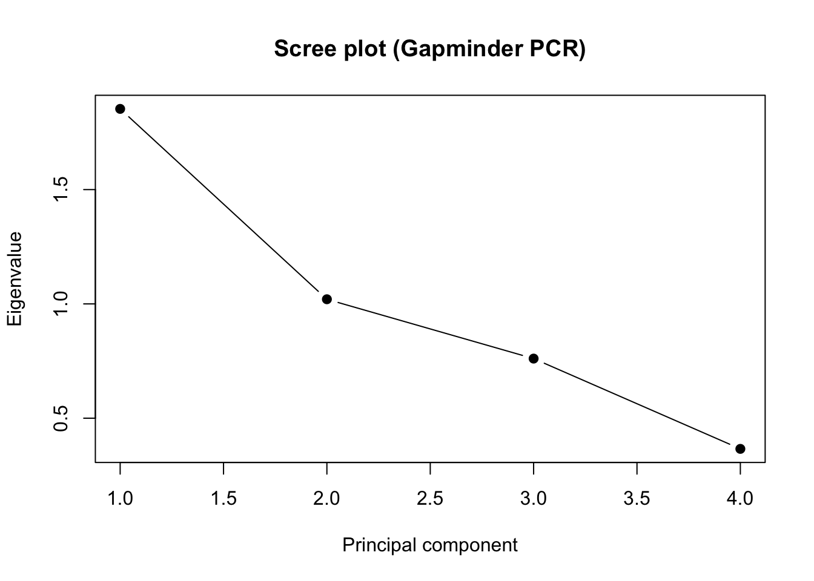
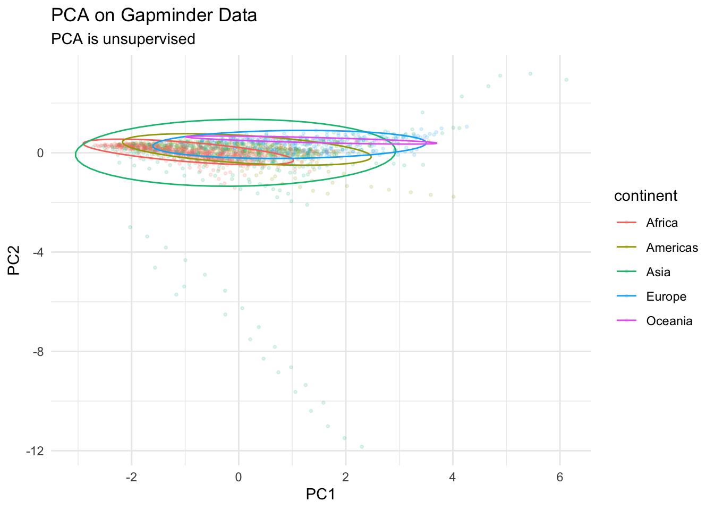

#setting up
set.seed(123)
library(tidyverse)── Attaching core tidyverse packages ──────────────────────── tidyverse 2.0.0 ──
✔ dplyr 1.2.0 ✔ readr 2.2.0
✔ forcats 1.0.1 ✔ stringr 1.6.0
✔ ggplot2 4.0.1 ✔ tibble 3.3.1
✔ lubridate 1.9.5 ✔ tidyr 1.3.2
✔ purrr 1.2.1
── Conflicts ────────────────────────────────────────── tidyverse_conflicts() ──
✖ dplyr::filter() masks stats::filter()
✖ dplyr::lag() masks stats::lag()
ℹ Use the conflicted package (<http://conflicted.r-lib.org/>) to force all conflicts to become errorslibrary(psych)
Attaching package: 'psych'
The following objects are masked from 'package:ggplot2':
%+%, alphalibrary(randomForest)randomForest 4.7-1.2
Type rfNews() to see new features/changes/bug fixes.
Attaching package: 'randomForest'
The following object is masked from 'package:psych':
outlier
The following object is masked from 'package:dplyr':
combine
The following object is masked from 'package:ggplot2':
marginlibrary(gapminder)
head(gapminder)# A tibble: 6 × 6
country continent year lifeExp pop gdpPercap
<fct> <fct> <int> <dbl> <int> <dbl>
1 Afghanistan Asia 1952 28.8 8425333 779.
2 Afghanistan Asia 1957 30.3 9240934 821.
3 Afghanistan Asia 1962 32.0 10267083 853.
4 Afghanistan Asia 1967 34.0 11537966 836.
5 Afghanistan Asia 1972 36.1 13079460 740.
6 Afghanistan Asia 1977 38.4 14880372 786.#PCA
gapminder_num <-gapminder %>%
select(lifeExp, pop, gdpPercap, year)
gap_continent <- gapminder$continent
round(cor(gapminder_num), 3) lifeExp pop gdpPercap year
lifeExp 1.000 0.065 0.584 0.436
pop 0.065 1.000 -0.026 0.082
gdpPercap 0.584 -0.026 1.000 0.227
year 0.436 0.082 0.227 1.000bart <- cortest.bartlett(cor(gapminder_num), n =nrow(gapminder_num))
bart$chisq
[1] 1092.066
$p.value
[1] 1.086279e-232
$df
[1] 6pca <- prcomp(gapminder_num, center = TRUE, scale. = TRUE)
summary(pca)Importance of components:
PC1 PC2 PC3 PC4
Standard deviation 1.3613 1.0101 0.8722 0.60482
Proportion of Variance 0.4633 0.2551 0.1902 0.09145
Cumulative Proportion 0.4633 0.7184 0.9085 1.00000eig <- pca$sdev^2
pve <- eig / sum(eig)
pca_var_table <- data.frame(
PC = paste0("PC", 1:length(eig)),
Eigenvalue = round(eig, 3),
PVE = round(pve, 3),
CumPVE = round(cumsum(pve), 3)
)
pca_var_table PC Eigenvalue PVE CumPVE
1 PC1 1.853 0.463 0.463
2 PC2 1.020 0.255 0.718
3 PC3 0.761 0.190 0.909
4 PC4 0.366 0.091 1.000plot(eig, type = "b", pch = 19,
xlab = "Principal component",
ylab = "Eigenvalue",
main = "Scree plot (Gapminder PCR)")
#test
broken_stick <- function(p) sapply(1:p, function(k) sum(1/(k:p)) / p)
bs <- broken_stick(ncol(gapminder_num))
retain <- data.frame(
PC = paste0("PC", 1:length(pve)),
ObservedPVE = round(pve, 3),
BrokenStick = round(bs, 3),
Keep = pve > bs
)
retain PC ObservedPVE BrokenStick Keep
1 PC1 0.463 0.521 FALSE
2 PC2 0.255 0.271 FALSE
3 PC3 0.190 0.146 TRUE
4 PC4 0.091 0.062 TRUEhead(pca$x) PC1 PC2 PC3 PC4
[1,] -2.717787 0.231963073 0.60591917 0.9135772
[2,] -2.495152 0.175680055 0.39318126 0.9136171
[3,] -2.266149 0.117707403 0.18171917 0.9054477
[4,] -2.021811 0.057439575 -0.02851666 0.8736913
[5,] -1.779619 -0.007104254 -0.24174332 0.8347563
[6,] -1.514763 -0.069488265 -0.44436085 0.7880600pca$rotation PC1 PC2 PC3 PC4
lifeExp 0.64988034 0.04082751 0.1120324 -0.75062467
pop 0.07977884 -0.94905455 0.2984743 0.06199899
gdpPercap 0.57347398 0.24844370 0.5147889 0.58685235
year 0.49236011 -0.18948432 -0.7958355 0.29719194#getting scores
scores <- as.data.frame(pca$x)
scores$continent <- gapminder$continent
scores$country <- gapminder$country
scores$year <- gapminder$year
pca_plot <- ggplot(scores, aes(PC1, PC2, color = continent)) +
geom_point(size = 0.7, alpha = 0.15) +
theme_minimal() +
labs(title = "PCA on Gapminder Data", subtitle = "PCA is unsupervised")
pca_plot + stat_ellipse()
man <- manova(cbind(PC1, PC2) ~ continent, data = scores)
summary(man, test = "Pillai") Df Pillai approx F num Df den Df Pr(>F)
continent 4 0.34973 90.015 8 3398 < 2.2e-16 ***
Residuals 1699
---
Signif. codes: 0 '***' 0.001 '**' 0.01 '*' 0.05 '.' 0.1 ' ' 1